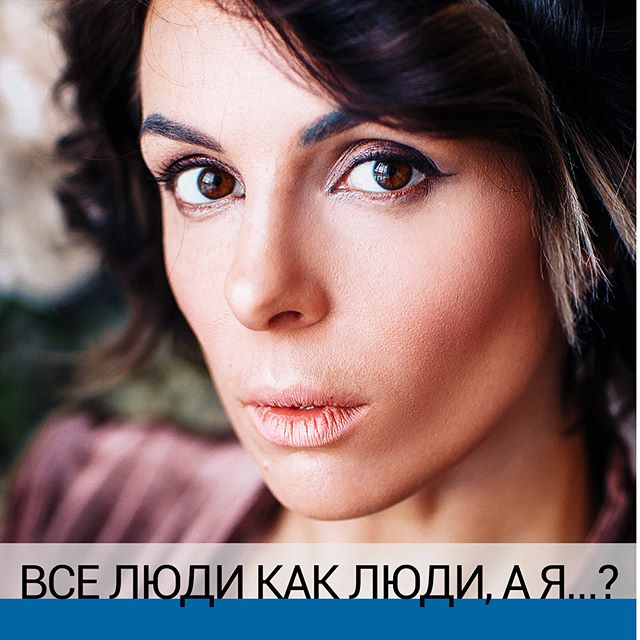

Лилия Нилова
- Очаровывайте, делайте упор на себе как на личности, а уже после, как на
профессионале, постоянно повышайте активность аудитории, поднимайте резонансные темы…
- Изучите конкурентов, купите у них товар. Оцените качество сервиса, проанализируйте
их сильные стороны и слабости – а потом сделайте круче!
- "Не нужно быть слаще меда,если в обычной жизни вы скорее редька,а может даже хрен"
- Сначала чини голову, потом загружай в неё инструменты и начинай их применять.
- По мне «стабильность» - очередная отговорка, чтоб не делать. Для меня стабильность - это ступень, на
которую надо наступить, чтобы идти дальше.
- Мне жизнь дана один раз. И последнее, что я хочу сделать, это прожить ее НОРМАЛЬНО. СРЕДНЕНЬКО.
УДОВЛЕТВОРИТЕЛЬНО.
- @popartmarketing.
- Моя книга Поп-арт маркетинг: Insta-грамотность
и контент-стратегия

Влада Олеговна
- Вес – следствие. А дело в причине.
- «ПРАВИЛЬНЫЙ ВОПРОС»
Звучит не «сколько можно это терпеть», а «ЧТО Я МОГУ СДЕЛАТЬ СЕГОДНЯ, чтобы изменить жизнь»❓
- меняйте стеклышко в очках, через которое вы смотрите на жизнь. Оно у многих заляпано чем-то мрачным.
- Любое решение - промежуточный этап к лучшему
Наталья Зубарева
- Если человек имеет нарушение углеводного обмена, то разницы не будет, съест он мед, сироп или белый
сахар. Мед=сахар+витамины.
- Начать процесс детоксикации своей жизни нужно с мелочей,но как говорится, в нашем деле, мелочей не
бывает.
- Кишечник-главный иммунный орган.
- Надпочечники-наши маленькие друзья, от которых в организме очень многое зависит.
- Онлайн школа
Алекс Булат
- Привет! Я Алекс - уже 10 лет как проснулся и живу осознанно. Я нашёл ключ к своей биологии,
разобрался, что делал со мной стресс, почему разные виды еды, приводили к разным нежелательным
процессам в теле, почему незнание чего я хотел от жизни, приводило в тупик.
- Даже если я приду в зал на 20 минут - я напоминаю своему телу, что оно создано для движения, а не
только сидения.
- Не бойтесь встать с заднего места и придти туда, где возможен прогресс!!!
- Каждый день мы делаем вещи, которые легко сделать и легко не сделать. Эти самые вещи и определяют
человека, которые будет смотреть на нас в зеркало через 10 лет.